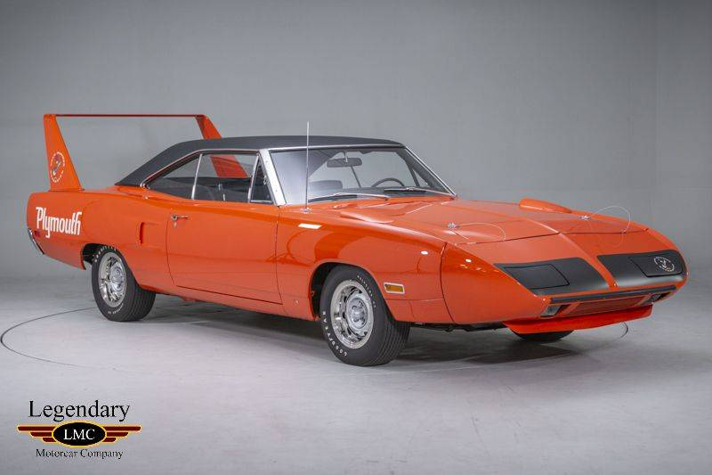
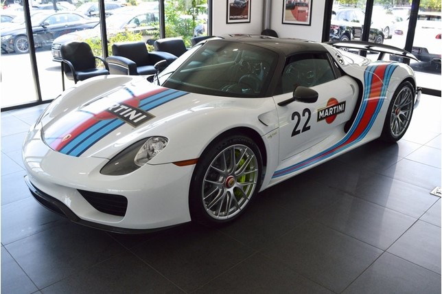

| The Plymoth Superbird | The Porche 918 Spyder |
|  |  |
| The Superbird is for sale at this link | The Spyder is for sale at this link |
Some quick facts about the Superbird
|
Some quick facts about the Spyder
|
|
The Plymouth Superbird is an iconic car. It has made appearances in a variet of television shows cuch as "Jay Leno's Garage" and "Counting Cars". The superbird most likely made an appearance in Disney's "Cars". In the movie the car called "The King" is voiced by Richard Petty who raced and owns a Superbird. However, since the movie is animated it is impossible to tell weather or not it is a Superbird or Dodge Daytona. The superbird is a modified version of the Roadrunner. It was built specifically for NASCAR. The exact number of how many were built is unkown but it is believed to be around 1,935. A well known feature on this car are the multiple roadrunner deacals. The decals are on the verticle sides of the rear spoiler and on the drivers side headlight door. The super bird has hidden headlights so a door pops open to allow them to come out. The superbird was offered with three different engines. You could choose between a 426 Hemi, 440 Super Commando 6 barrel, or 440 Super Commando 4 barrel. The Porche 918 Spyder has also appeared on a multitude of shows including "Top Gear" and, again, "Jay Leno's Garage". Being that the 918 is a hybrid the car has all electric capabilities, meaning it does not need gas to run. The 918 can only go 12 miles on a single charge. The battery can be charged eletrically or by fuel. Two liters of fuel is needed to fully charge the battery. The car made its debut at the Geneva Motor Show in March of 2010. So many people showed interest that Porche began production and built 918 of them. Of those 918 produced about 297 are in the United States. The car was assembled in GermanyThe car is powered by a 4.6 liter 280 cubic inch engine, and an additional two electric motors powered by lithium ion batteries. The 918 is capable of going 0-60 in 2.2 seconds and can run a quarter mile in 9.8 seconds. The 918 offers 5 different driving modes. These five modes allow the driver to choose between the calm electric driving and the agressive race mode. These two cars a very different from one another, but I love both of them. The superbird has an amazing history behind it. Collectors and enthusiasts alike would love to have the superbird. The superbird shows us the devlopment of cars over the years. The superbird shows how technology back then limited what car producers were able to make. Looking back, the Superbird shows how suspension work has changed, how aerodynamics have changed, how body style preferences have changed and even what accesories have changed. The 918 Spyder shows what current preferences are. The Spyder has the big windshield, lower profile spoiler, sleek body lines, and bigger headlights. The Spyder also has bigger tires and bigger brakes. This allows to take off faster and slow down quicker. Even though the two cars were made many years apart they both share many aspects that any car enthusiast loves. They are both fast, they both make great show cars,and they both get a bunch of attention. |
|
Made by Alex Smith, 11/26/18